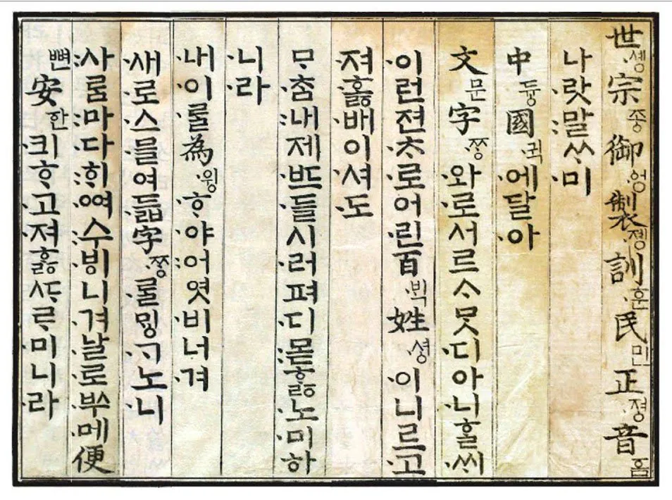

나랏말이 중국과 달라서 만들게 된거라고
첫 문장부터 박아줌

나랏말이 중국과 달라서 만들게 된거라고
첫 문장부터 박아줌

ㄱ-
뭔 개 씹소리를 하고 싶은거냐
댓글 달리도록 어그로 끌고싶은거임
인생이 얼마나 서글프면 댓글알림에 행복을 느끼는건지 상상조차 안 됨...ㅠㅠ
대명사를아시나요
당시 국호와 현재 사람들이 부르는 국호는 다른 게 많음
중국은 항상 본인들을 중국이라 그랬는데 그러면 구분이 안 되니 후대 사람들이 다르게 부르는 거
고조선이나 고구려도 스스로를 조선 고려라 칭하고 그랬음 후대 사람들이 헷갈리니 고조선 고구려로 명명한 거
그... 저때는 중화인민공화국이라는 뜻으로 부른게 아니에여...
훈민정음 보면 중국이 명나라라고 친절히 주석도 달아주심^^
그 동네 왕조(정식 국호)가 당송명 이런식으로 바뀌는데, 그 동네(지리적으로나, 아니면 '중화'문명이라는 의미에서나)는 '중국' 이라고 불렀음, 중국 스스로나 그 주변 나라에서나
주원장도 류큐에 보내는 조서에
復我[中國]之舊疆 朕為臣民推戴 即皇帝位 定有天下之號曰[大明]
우리 [중국]의 강역을 되찾았다, 짐이 천하와 백성의 추대를 받아 황위에 올랐다, 천하를 다스리는 나라의 이름을 [대명]으로 하였다
라고 적었고
그 이전 당, 송 시절에도 당, 송이 지배하는 권역을 '중국' 이라고 하기도 하고, 중화 문명권을 중국이라고 하는 등 '중국'이라는 말을 썼음
고려에 보낸 국서에도
元非我類 天命入主中國百有餘年
원은 우리와 같은 부류가 아니지만, 천명을 받아 중국에 들어와 주인 노릇을 한지 벽년이 지났다. 라고 한바도 있고
북송시절에는 화이론에 입각한 '중국론' 이라는 책도 있었지
훈민정음에서 '중국어'를 쓰는 문명권을 말하고, '말'이 다르다는걸 표현하려면 '명' 이 아니라 '중국'을 쓰는게 더 맞는 표현임
'중국'은 천하의 중심에 있는 정치적, 문화적, 지리적 공간같은 의미로 계속 쓰이던 단어고
국호는 계속 바뀌니까 오히려 국호를 쓰는건 맞지 않지
난 이런글 보면 죽은 인터넷 이론이 생각이 남
ai일듯
아만보..


개처맞네 ㅋㅋㅋ너무 줘패지마라 나도 고딩때 이렇게배워서 잘못된 지식가질수있다고 생각함 ㅋㅋ
중국이란말이 그 쨩 말하는게아니라
수도 한양을뜻하는거고 각 지방에서 사투리가 한자표기시 읽기 힘들었던게있어서
우리 조선말을 제대로 표현하게 만든게 한글이다 이런식으로 가르쳤거든ㅋㅋㅋㅋ
생각해보면 그 국어쌤도 뭐 박사급은아니니깐 지 뇌피셜로 생각하고 가르쳤을꺼같긴함ㅋㅋㅋㅋ
요즘 단어하나에 집착한다는 사람이 이런사람이구나
그런 새끼들 특) 지들이 집착하는 그 한 단어조차 제대로 이해를 못 해놓고 틀린 지식으로 집착함 ㅋㅋㅋ
GOAT
마참내!
다 지들꺼라고 쳐 우겨도 이건 쉽지않지? ㅋㅋ